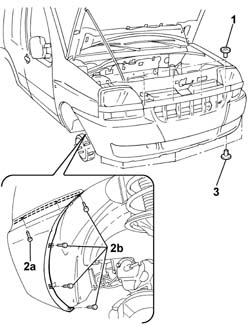
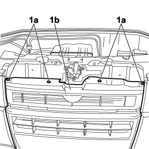
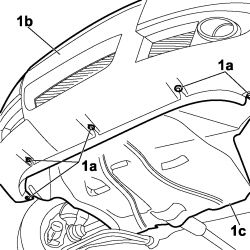
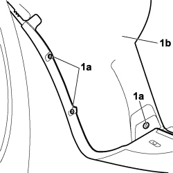
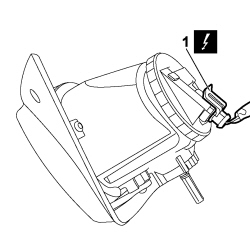
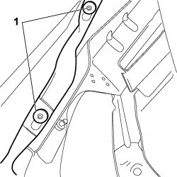
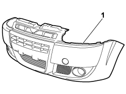

7210E10 R.R. FRONT BUMPER
- Path
- Procedures > 72 PANELS AND FRAMES > 7210 REMOVING-REFITTING > 7210E external parts > 7210E10 R.R. FRONT BUMPER
- Kind
- repair procedure (removal / refitting; the operation number is the code)
- Applies to
- all engines; all production periods
- Interactive page
- https://sloeber94.github.io/elrnDB-fDbl/en/#/2585261
Applies to: engines: 1.2 8v, 1.6 16v, 1.3 JTD 16V, 1.9 JTD 8V, 1.9 DIESEL; all production periods
 Removing
Removing
 Refitting
RefittingPlace the vehicle on a stand and open the bonnet.
Op. 7055B54 PROTECTION/GUARD UNDER ENGINE - R.R.
1. Undo the upper bolts fixing the bumper.
Raise the ramp.
2. Undo bolts (2a) from the wheel arch and bolts (2b) from the body on both sides of the bumper.
3. Undo the lower bolts and remove the bumper.

Applies to: engines: 1.2 8v, 1.6 16v, 1.3 JTD 16V, 1.9 JTD 8V, 1.9 DIESEL; all production periods
Refitting
RemovingCheck the bumper is undamaged.
Position the bumper and tighten the lower bolts to the body.
Tighten the side retaining bolts to the wheel arch and body on both sides.
Op. 7055B54 PROTECTION/GUARD UNDER ENGINE - R.R.
Lower the lift and tighten the upper bolts.
Close the bonnet lid and remove the vehicle from the lift.
Applies to: engines: 1.4 8v, 1.6 16v, 1.3 JTD 16V, 1.9 JTD 8V; production: da 12/03; only with equipment: MY 2005
Removing
RefittingPosition the vehicle on the lift.
Turn the ignition key to the OFF position.
Lift the bonnet
Disconnect the negative battery terminal.
Description | Connector | |
|---|---|---|
- | BATTERY |
Op. 7055B08 GRILLE (ONE) ON FRONT BUMPER - R.R
1. Unscrew the upper bolts (1a) securing the front bumper (1b) to the body.

Applies to: engines: 1.4 8v, 1.6 16v, 1.3 JTD 16V, 1.9 JTD 8V; production: da 12/03; only with equipment: MY 2005
1. Unscrew the bolts (1a) securing the front bumper (1b) to the under-engine shield (1c).

Applies to: engines: 1.4 8v, 1.6 16v, 1.3 JTD 16V, 1.9 JTD 8V; production: da 12/03; only with equipment: MY 2005
Turn the wheels as appropriate.
1. Unscrew bolts (1a) securing wheel arch (1b) to the front bumper on both sides.

Applies to: engines: 1.4 8v, 1.6 16v, 1.3 JTD 16V, 1.9 JTD 8V; production: da 12/03; only with equipment: MY 2005
1. Working on both sides, move the wheel arch and disconnect the electrical connection from the foglamp.
Description | Connector | |
|---|---|---|
1 | LEFT FOG LIGHT |
Description | Connector | |
|---|---|---|
1 | RIGHT FOG LIGHT |

Applies to: engines: 1.4 8v, 1.6 16v, 1.3 JTD 16V, 1.9 JTD 8V; production: da 12/03; only with equipment: MY 2005
1. Working on both sides, move the wheel arch and unscrew the bolts securing the front bumpers to the body.

Applies to: engines: 1.4 8v, 1.6 16v, 1.3 JTD 16V, 1.9 JTD 8V; production: da 12/03; only with equipment: MY 2005
1. Remove the front bumper from the vehicle.

Applies to: engines: 1.4 8v, 1.6 16v, 1.3 JTD 16V, 1.9 JTD 8V; production: da 12/03; only with equipment: MY 2005
Refitting
RemovingCheck that the front bumper is not damaged.
Place the front bumper in its housing.
Connect the electrical connection to the fog light.
Description | Connector | |
|---|---|---|
- | LEFT FOG LIGHT |
Description | Connector | |
|---|---|---|
- | RIGHT FOG LIGHT |
Tighten the front bumper lower bolts.
Tighten the upper bolts fixing the front bumper.
Op. 7055B08 GRILLE (ONE) ON FRONT BUMPER - R.R
Connect the negative battery terminal.
Description | Connector | |
|---|---|---|
- | BATTERY |
Remove the vehicle from the lift.
Topics linked from this page (5)
- 7055B08 GRILLE (ONE) ON FRONT BUMPER - R.R
- 7055B54 under-engine guard - r r
- A001 BATTERY
- F015 LEFT FOG LIGHT
- F016 RIGHT FOG LIGHT
Topics that link to this page (30)
- 1004B10 POWER UNIT WITH MANUAL GEARBOX - R.R
- 1020A20 crank case oil sump - r + r clean seals for sealant application
- 1020D26 flywheel side oil seal cover - r+r
- 1024B10 engine flywheel - r + r for versions with manual gearbox
- 1042B10 CNG supply PIPE from solenoid valve to pressure reduction unit - R.R.
- 1060E40 supplementary pressure pump - r r
- 1072B50 sleeves connecting air capacity box to inlet manifold is - r+r
- 1084B26 emgine oil intake duct - r r
- 1088B20 engine cooling radiator - r + r
- 1088B24 engine cooling radiator - r r for air conditioned versions
- 1088B26 Engine cooling radiator AIR DUCT PROTECTION/ - R.R.
- 1088B32 engine cooling radiator support beam - r r
- 1088B34 engine cooling radiator support pin one left or right r r
- 1088E10 radiator cooling fan - r + r
- 1088E11 fans with single engine duct - r+r
- 1810A20 clutch - r + r
- 2110A10 manual gearbox and differential - r + r
- 5040A40 air conditioner condenser - r+r
- 5040A44 air conditioner dehydrating filter/accumulator - r+r
- 5040A50 pipe from compressor to air conditioner condenser - r+r
- 5040A52 pipe from condenser to dehydrating filter - r+r
- 5040A54 pipe from dehydrating filter to expansion valve - r+r
- 5040A60 PIPE FROM CONDENSER TO EVAPORATOR (EXPANSION PIPE) - R+R
- 5040B14 air conditioner system multi-level pressure switch - r+r
- 5540B86 LEFT HEADLAMP SUPPORT - R.R. WITH HEADLAMP REMOVED.
- 5540B70 LEFT FRONT LIGHT CLUSTER WITH DIRECTION INDICATOR - R.R.
- 7055A65 Crossmember/rear trim MOULDING - Painting after Replacement.
- 7055A66 TRIM (ONE) UNDER HEADLAMP - R.R.
- 7210A15 R.R. FRONT WING/HEADLAMP HOUSING CROSSMEMBER
- 7210A18 R.R FRONT CROSSMEMBER